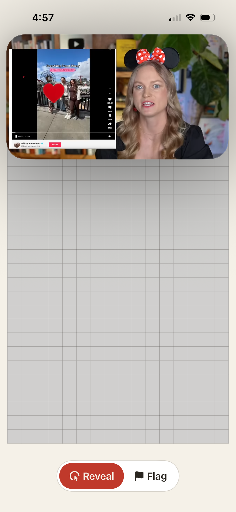

Candidate variant 1 of 4
The Hard 16x30 board renders at a smaller cell size when Video Mode is on, so the full grid fits between the reserved PiP-large top band and the compact control row at the bottom — no scroll, no new gesture.
MagnifyGesture + auto-scale cellSize system from
Plan 06.1-03 is preserved. Implementation: reduce minCellSize
constant when Video Mode is on (e.g. 18pt → 12pt) and re-run the existing
auto-scale formula against the new available height. Pinch still works to
expand the user's view if they want larger cells. No gesture composition change.

| Aspect | v1.0 (non-Video-Mode) | Variant 1 (Video Mode on) |
|---|---|---|
| Cell size floor | 18pt (A11Y-05) | ~12pt (this variant) |
| Pinch-zoom | Available (0.8x–2.0x) | Available (unchanged) |
| Horizontal scroll fallback | Yes (06.1-03 D-16) | Eliminated for Pro Max (fits inline) |
| New gesture | — | None |
| Code surface | — | One constant + Video-Mode-aware branch in cellSize() helper |
Baseline squeeze under current 18pt floor:
Docs/screenshots/v1.2-design/mines-hard-classic-pip-large.png — Classic preset, Large-top PiP applied, current cell size insufficient.Docs/screenshots/v1.2-design/mines-hard-dracula-pip-large.png — Dracula preset (CLAUDE.md §8.12 audit), same squeeze.Small-PiP corner set (proves Hard already fits at current cell size when PiP is small — Video Mode small PiP does NOT trigger this variant):
mines-hard-dracula-pip-small-{tl,tr,bl,br}.png